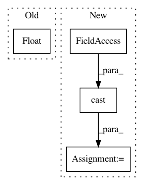

5527dea6aa673f05fed6061255340a9e96e3fc90,mesh_tensorflow/transformer/learning_rate_schedules.py,,linear_decay_learning_rate,#Any#Any#Any#Any#,50
Before Change
if step < offset:
return initial_lr
slope = initial_lr / float(total_train_steps - offset)
return initial_lr - slope * (step - offset)
@gin.configurable
After Change
a tf.Scalar, the learning rate for the step.
offset = tf.cast(offset, tf.float32)
step = tf.cast(step, tf.float32)
return initial_lr * tf.minimum(1.0, (total_train_steps - step) /
(total_train_steps - offset))
In pattern: SUPERPATTERN
Frequency: 3
Non-data size: 4
Instances
Project Name: tensorflow/mesh
Commit Name: 5527dea6aa673f05fed6061255340a9e96e3fc90
Time: 2020-02-12
Author: marcvanzee@google.com
File Name: mesh_tensorflow/transformer/learning_rate_schedules.py
Class Name:
Method Name: linear_decay_learning_rate
Project Name: reinforceio/tensorforce
Commit Name: fbf3bafd970d3539ad774bae5f46a4b730901cb5
Time: 2017-01-15
Author: mi.schaarschmidt@gmail.com
File Name: tensorforce/updater/trpo_updater.py
Class Name: TRPOUpdater
Method Name: create_training_operations
Project Name: tensorflow/tpu
Commit Name: 21cd0774c8c3d41a8464427c81629075c953e7e3
Time: 2018-09-05
Author: xiejw0217@gmail.com
File Name: models/official/retinanet/retinanet_model.py
Class Name:
Method Name: learning_rate_schedule